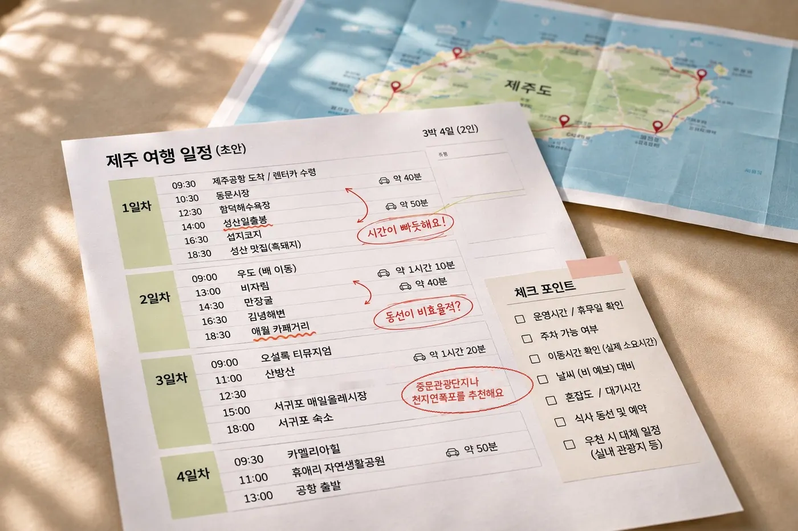

01 / ESSENTIAL
일정 검수
5,000원
- 1:1 여행 일정표 검수
- 시간·동선 최적화
- 리스크 브리핑
- 당일 1회 재상담
정성껏 준비한 제주 여행 계획.
이동 동선부터 일정의 빈틈까지,
출발 전에 제주 여행 일정을 한 번 더 살펴보세요.

여행지는 하나하나 좋아도, 그 장소들을 하루에 모두 방문하는 것이 좋은 일정이라는 뜻은 아닙니다.
여행 준비의 마지막 단계, 지금제주가 일정에 놓친 부분이 없는지 함께 확인합니다.
“어디를 갈지”만큼 중요한 것은
“어떤 순서로, 얼마나 여유 있게”
여행할지입니다.
지금제주의 일정 검수는 여행 취향과 계획을 바꾸는 것이 아니라, 작성한 일정에서 점검할 부분을 찾아 개선 방향을 제안하는 서비스입니다.
일정을 보내주시면 제주여행플래너가 동선과 시간을 살펴보고, 여행 취향에 맞춰 식사 장소와 카페까지 제안합니다.
※ 서비스 이용 과정을 설명하기 위한 가상의 카카오톡 형식 대화입니다. 실제 고객 상담 기록이 아니며, 시간표와 추천은 예시입니다. 특정 식당·카페의 영업·주차·예약 가능 여부는 별도 확인이 필요합니다. 맛집·카페 추천 및 상담 범위는 선택한 요금제에 따라 다릅니다.
제주를 잘 아는 현지 여행 전문가, 제주여행플래너가 직접 검수합니다.
인터넷 검색만으로 확인하기 어려운 현지 운영 상황과 계절별 여행 변수까지 살펴보고, 여행자의 일정과 취향에 맞는 개선 방향을 제안합니다.
제주 현지 여행 전문가인 제주여행플래너가 여행 일정 전체를 직접 살펴봅니다. 소개된 장소가 여행 날짜에 적합한지, 이동에 무리는 없는지, 주변에 더 나은 선택지는 없는지 함께 검토합니다.
실제 제주 지역별 이동 특성과 교통 상황을 고려해 여행 동선을 점검합니다.
관광지 체류시간과 이동·식사시간을 함께 고려해 무리 없는 일정을 제안합니다.
제주 현지 운영정보를 바탕으로 휴무일, 예약, 날씨, 예상 대기시간, 주차 조건 등 확인할 사항을 점검합니다.
제주여행플래너가 여행자의 취향과 동선을 고려해 관광지, 로컬 맛집, 카페를 추천합니다. (상품 단계별 제공 범위 상이)
계절별 개화 상황과 여행 시기, 동행인의 특성을 고려해 일정을 보완합니다.
제주 현지 여행 전문가에게 궁금한 점을 상담하고, 선택한 상품에 따라 출발 전 추가 수정과 여행 중 상담을 이용할 수 있습니다.
간단한 동선 확인부터 여행 전반의 큐레이션까지. 지금 필요한 범위에 맞춰 선택하세요.
검수 결과 수정할 내용이 없다면 100% 환불해드립니다.
나에게 필요한 검수 단계와 상담 범위를 선택합니다.
여행 날짜, 인원, 이동수단, 준비한 일정을 전달합니다.
상담 후 안내된 절차로 결제하면 일정 검수가 진행됩니다.
검수 의견을 확인하고 선택한 단계의 상담을 이용합니다.
여행 형태에 따라 필요한 검수와 상담도 달라집니다. 어떤 상황에서 어떤 서비스를 활용할 수 있는지 살펴보세요.
서비스 활용 예시 — 아래 12개는 실제 고객 후기가 아니라, 여행 상황별로 제주GO를 활용하는 방법을 정리한 예시입니다.
성산과 애월을 하루에 모두 돌려는 일정이라면, 지역별로 동선을 나눠 이동시간을 줄이고 일정에 여유를 만들어 드립니다.
관광지 근처에서 식사할 곳이 고민이라면, 유명한 곳뿐 아니라 동선상 이동하기 편한 식당까지 함께 추천해 드립니다.
AI로 만든 일정이라면, 현지 플래너가 실제 이동시간과 방문 순서를 다시 검토해 검색만으로는 놓치기 쉬운 부분을 짚어 드립니다.
가고 싶은 카페의 웨이팅이 길다면, 비슷한 분위기의 주변 카페를 대안으로 함께 제안해 드립니다.
출발 전까지 일정이 여러 번 바뀌어도, 카카오톡으로 그때그때 상담하며 일정을 다시 맞출 수 있습니다.
방문하려는 관광지가 여행 당일 휴무인지 미리 확인해, 헛걸음하지 않도록 일정을 점검해 드립니다.
아이와 함께하는 여행이라면, 아이가 즐길 만한 장소와 날씨에 따른 대체 코스까지 출발 전까지 함께 준비합니다.
항공권, 식당, 관광지 예약까지 하나하나 챙기기 번거롭다면 플래너가 대신 예약해 드립니다. 관광지는 제휴 할인 가격으로 더 저렴하게 예약할 수 있습니다.
오후 일정이 비어 있다면, 동행인의 취향을 고려해 근처 관광지와 카페로 빈 시간을 채워 드립니다.
카카오톡으로 질문하고 답변받는 방식이라, 궁금한 점을 편하게 물어보고 정리된 답변을 받아볼 수 있습니다.
둘이 꼭 가고 싶은 장소는 그대로 두고, 무리한 이동만 줄이는 방향으로 일정을 다듬어 드립니다.
여행 중 갑자기 일정이 바뀌어도 현지 플래너에게 바로 연락해 주변 대체 코스를 실시간으로 안내받을 수 있습니다.
상품 단계별 제공 서비스는 요금 안내를 기준으로 하며, 상담 가능 시간과 범위는 신청 전 확인해 주세요.
상세한 이용 조건은 신청 전 카카오톡 상담 채널에서 안내해 드립니다.
가능합니다. 2단계부터는 관광지·맛집·카페 추천과 빈 일정 보완이 포함되어 있습니다. 준비된 일정의 정도를 상담 시 알려주세요.
검수와 상담은 매일 09:00–18:00에 진행합니다. 완료 시각은 접수량과 선택한 단계에 따라 달라질 수 있어, 신청하실 때 예상 시간을 함께 안내해 드립니다.
검수 결과 수정할 내용이 없는 일정이라면 결제 금액을 100% 환불해 드립니다. 구체적인 적용 기준과 절차는 결제 전 상담에서 안내해 드립니다.
4단계 프리미엄 케어에 대신 예약 서비스가 포함되어 있습니다. 예약 가능한 범위, 예약금 등 별도 비용, 결제 방식은 상담 시 안내해 드립니다.
일정 검수는 계획 수립 시점의 정보와 조언을 제공하는 서비스입니다. 관광지 운영, 교통과 날씨 등의 실제 상황은 여행일에 변동될 수 있습니다.
여행을 기다리는 마음은 설렘으로 채우고,
일정에 대한 고민은 지금제주에 물어보세요.
상담 버튼을 누르면 공식 카카오톡 채널로 이동합니다.